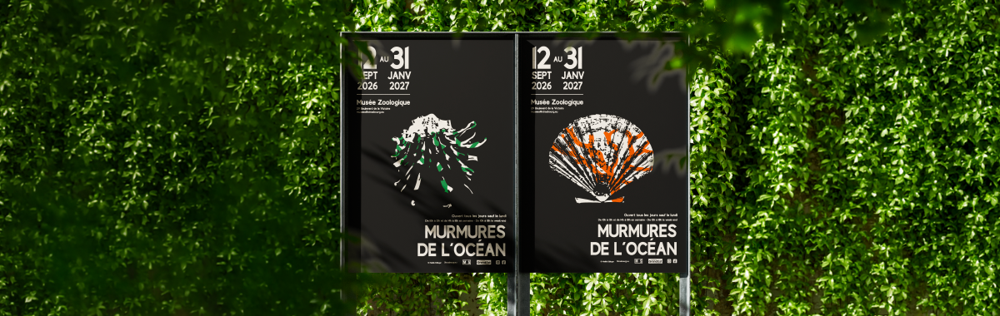
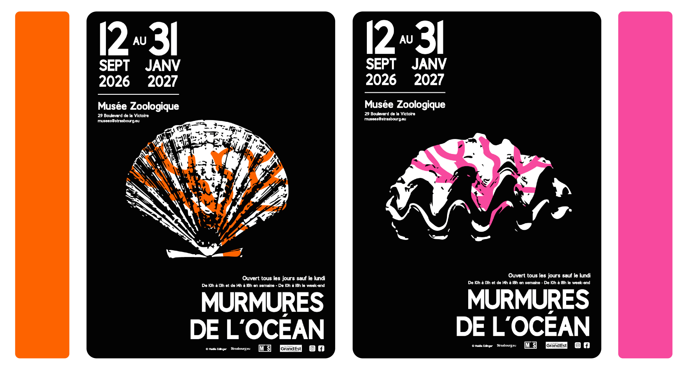
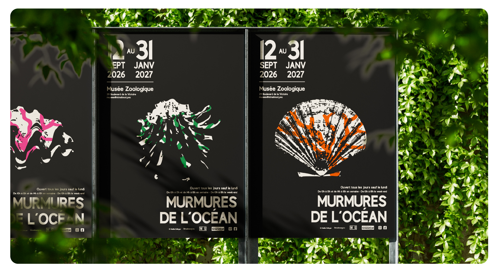

Ce projet porte sur la création d’affiches destinée au Musée Zoologique de Strasbourg, réalisée à partir d’un style graphique imposé.

Explorer et diversifier mon style graphique en travaillant dans un cadre défini, tout en conservant une liberté créative.
Conception d’affiches pour des expositions du musée, avec une approche visuelle contemporaine et expressive.
Une esthétique inspirée du travail de Peretz Rosenbaum, revisitée afin de proposer un univers graphique personnel et actuel.
